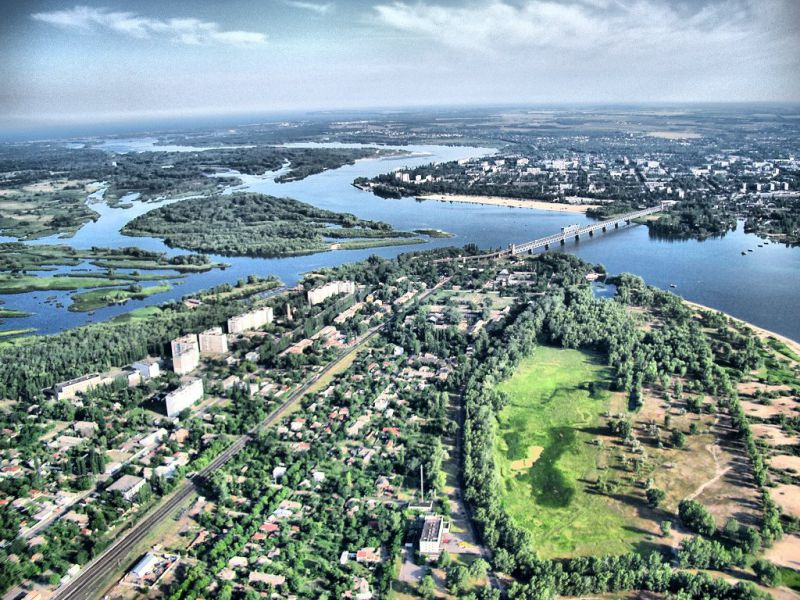

Цікаве про Кременчук
Кременчу́к — місто в центральній частині України, адміністративний центр Кременчуцького району Полтавської області. Складається з Автозаводського та Крюківського районів. Розташований на річці Дніпро. Кременчуцька агломерація входить до десятки найбільших у країні. Интересное про Кременчуг
На сьогодні у місті функціонує:
- 86 промислових підприємств
- 58 будівельних організацій різних форм власності
- 14 тисяч суб'єктів підприємницької діяльності
- Площа: 96 км²
- Висота над рівнем моря: 190 м
- Погода:
- температура 11°C
- вітер Пд, 5 км/год
- вологість 66 %

Географічні дані
Походження назви
За найпоширенішою версією назва міста походить від тюркського слова «керменчик», що у перекладі означає «невелика фортеця». Словосполучення «кермен» (фортеця) «чик» (кордон, межа) дослівно з татарської перекладається і як «прикордонна фортеця». Саме як «Керменчик» згадана переправа через річку Дніпро в районі сучасного міста у документі 1550 року. Назва ця досить часто трапляється на всій території історичного поширення тюркських топонімів. Згідно з версією Ф. Ніколлайчика, назва міста також має тюркське походження — від татарського «кер», або «кир», що означає пагорб. Серед інших припущень — патронімічна легенда про походження назви від імені міфічного засновника — козака (або рибалки) Кременя. Також існує легенда про те, що у старі часи, коли тут пропливали торговельні човни, стерновий, помітивши гранітні пороги, вигукував: «Кремінь! Чув?» (згодом це словосполучення переросло у теперішню назву). У середині XIX ст. зрусифікований фольклор породив версію про засновника Кремень-Чуга, сина Чуга — засновника Чугуєва (легенда відбивала реальне зростання значення Харкова для Кременчука — між містами пролягла залізниця). Наприкінці ХХ ст. з'явилася фантастична версія про руське походження міста — що Володимир, вдячний одному воїнові, віддав йому кременчуцьку землю під заселення. У староукраїнській та діаспорній літературі зустрічається назва міста «Кремінчук».
Заснування
Офіційною датою заснування Кременчука, за згадкою в хроніці Йоахима Бєльського (який продовжував історичну працю свого батька Мартина Бєльського), вважають 1571 (дату цю у XIX ст. спопуляризувала «Історія Малоросії» Миколи Марковича). У Бєльського згадка Кременчука навіяна проєктом 1590 р., коли польський король видав наказ про побудову тут фортеці, куди також планували вивести козаків з Запоріжжя, аби менше конфліктували з турками. З історіографії XIX ст. (за непідтвердженою джерельно згадкою литовського історика Теодора Нарбута) походить версія про заснування Кременчука (1390—1420 рр.) великим литовським князем Вітовтом. Джерельно засвідчене безперервне існування Кременчука як повноцінного міста (а не осередку уходництва, згадуваного ще за ревізією Черкаського замку 1552 р.) лише з 1635 р., коли польський король Владислав IV Ваза надав йому магдебурзьке право. Утім, деякі дослідники, відштовхуючись від археологічних даних про проживання людей на території сучасного Кременчука, відстоюють києворуський родовід міста.
Цікаві факти про Кременчук
- Скільки б не прожив у цьому місті, він не перестає дивувати, відкриваючи нові відомості про себе, винаходячи все більш креативні способи вираження тимчасових і суспільних тенденцій через своїх городян! Із цим важко посперечатися.
- А так виглядала декомунізація по-кременчуцькому. Скульптуру Леніна на центральній площі Перемоги Кремня знесли в лютому 2014 року, постамент залишився і простояв до другої половини липня 2016 року. Кам'яна брила виявилася добротно і глибоко вкопаною. Кременчужани називали це «склянкою», надто вже постамент нагадував радянський «гранчак». 20 липня поточного року «стакан» упав. Від колишнього постаменту скульптурі Леніна залишилася купа кам'яної крихти та спогади. До того ж Кременчук став першим містом України, де процес декомунізації досяг свого фіналу.
- У Кременчуці проживає лелека Гриша. Деякі кременчужани, щоправда, називають його Юрієм чи Ігорем. Ось така кумедна історія. Зимує птах у небайдужої кременчужанки, яка прихистила Грицю ще пташеням. Влітку лелека живе на волі і неодноразово була помічена в різних центральних частинах міста, де почувається «як удома». Харчується Григорій у районі Центрального продовольчого міського ринку, тут його частують рибою. Прохолоджується птах на міському пляжі, іноді відверто «заграючи» до дівчат, що загоряють тут.
-
А ще я пригадав Ільфа і Петрова, які зробили Кременчук, містом дитинства Остапа Бендера. Тарас Шевченко колись записав у своїх нотатках, після відвідин Кременчука, народну пісню:
Пливе щука з Кременчука,
Пливе собі стиха,
Хто не знає закохання,
Той не знає лиха.
Там більше куплетів, але одного достатньо, щоб зрозуміти – в Кременчуці багато риби, бо тут Дніпро. Чи багато саме щук – не знаю, але пісенній героїні пам’ятник поставили.